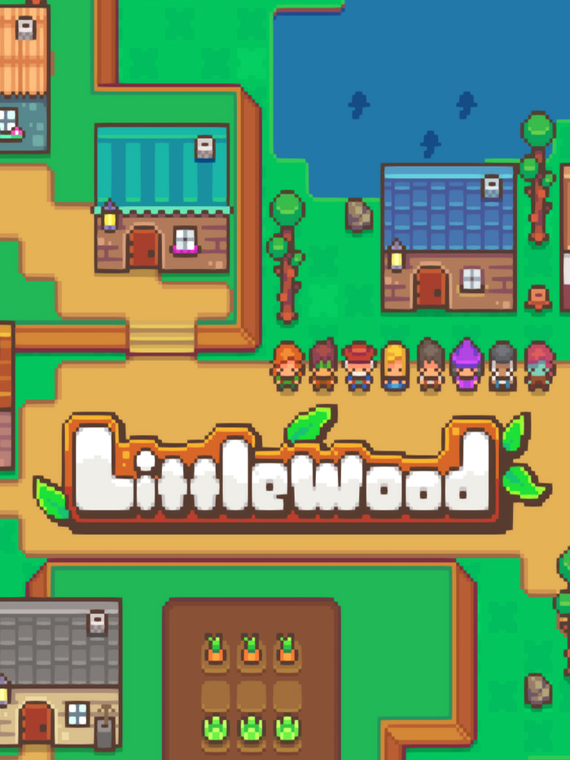

Littlewood
Littlewood
Details
|  | |
| Playtime | 13h 40m 0s |
| Last Activity | 2020-07-19 23:24:35 |
| Added | 2023-08-11 0:29:07 |
| Modified | 2025-10-02 10:21:27 |
| Completion Status | Completed |
| Library | Steam |
| Source | Steam |
| Platform | Macintosh PC (Linux) PC (Windows) |
| Release Date | 2019-06-18 |
| Community Score | 65 |
| Critic Score | |
| User Score | |
| Genre | Adventure Indie Role-playing (RPG) Simulator |
| Developer | Sean Young |
| Publisher | SmashGames |
| Feature | Single Player |
| Links | Official Website YouTube Itch Steam GOG Discord Subreddit Community Wiki Twitch Nintendo |
| Tag | 2D Agriculture Building Casual Character Customization City Builder Collectathon Crafting Cute Exploration Farming Sim Fishing Life Sim Open World Pixel Graphics Relaxing Romance RPG Sandbox Simulation |
Description
You defeated the Dark Wizard. The world of Solemn is finally at peace, but at what cost? You can't quite remember...


The Hero Who Saved the World
- Explore the vast world of Solemn. Enchanted Forests, Bustling Fishing Towns, & Dark Mining Caves are some of the few places to visit.
- Meet Townsfolk and convince them to stay in your town. Perhaps meeting people will unlock your memories of the past…
- Collect rare items and materials found across the world and bring them back to your town for selling and crafting!
Customize Your Town
- Harvest materials by chopping wood, mining ores, catching bugs, and fishing in rivers and ponds!
- Unlock new structures to build by meeting new Townsfolk. Want a Tavern or a Lumber Mill? How about a Fishing Hut or a Magical Library? Your town's design is all up to you!
- Fulfill your Townsfolk's requests. Some may want to live on a higher elevation, others may want to be surrounded by trees and water. Fulfilling the requests of your Townsfolk will earn you their hearts and unlock new relationship paths.
Master New Hobbies & Crafts
- Gathering: Whether you’re picking fruit or picking weeds, your gathering skill will level up! The Gatherer’s Glove is needed to unlock this ability.
- Mining: Looking for shiny ores to collect? Interested in rare materials for crafting? Then mining is for you!
- Woodcutting: Those pesky trees and debris that keep popping up all over town needs to be chopped! Wood is an essential material for building new structures and furniture.
- Bug Catching: Craft a Bug Net and catch all sorts of critters. Be sure to go bug hunting during each season and at different times of the day!
- Fishing: There's nothing quite like relaxing by a pond with a fishing rod in hand. You can sell fish for a decent price at the Shopping District, or use them as ingredients for new cooking dishes.
- Farming: Plant some seeds in tilled soil and wait a few days. Veggies are an essential ingredient to many cooking recipes! Also, they make your town look pretty.
- Cooking: Once you've built the Tavern and have become good friends with Bubsy, you'll be able to start cooking delicious meals for your Townsfolk! Maybe you can attract rare Townsfolk by serving unique dishes...
- Crafting: There are tons of structures, decorative monuments, and furniture to craft. Often times your Townsfolk will request specific objects that they would like to be placed in their home. Make sure you gather enough building materials!
- Merchanting: Selling items at the Shopping District will net you large sums of Dewdrops, which is the main currency in Solemn. As you become a better Merchant, rarer items will appear for you to buy!
- Tarott Master: Once the Dark Wizard was defeated, all of his monsters were sealed away into Tarott Cards. Many Townsfolk collect and battle with these cards, and there is even a big competition held each year in Dirboros. Get collecting!
Make New Friends
- Willow: A cheery young girl who wants to rebuild Littlewood. She found you in the middle of the forest and took care of you for 3 days while you were unconscious. She likes working with tools and is quite proficient at building things.
- Dalton: A ditsy boy who loves going on adventures with you. Despite his forgetfulness and silly demeanor, he actually can tell some very clever jokes. He enjoys fishing, catching bugs, and shopping for cool furniture.
- Lilith: A Wizard who graduated at the top of her class at Alexandria's Magical Academy. When she's not reading a book she's mixing random things together to make potions that may or may not explode. Also, she is your biggest fan.
- And many more!